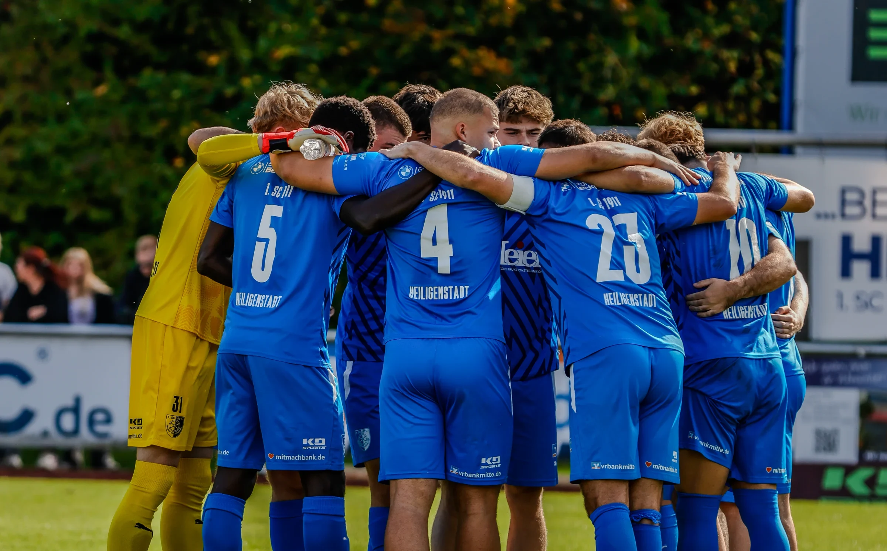
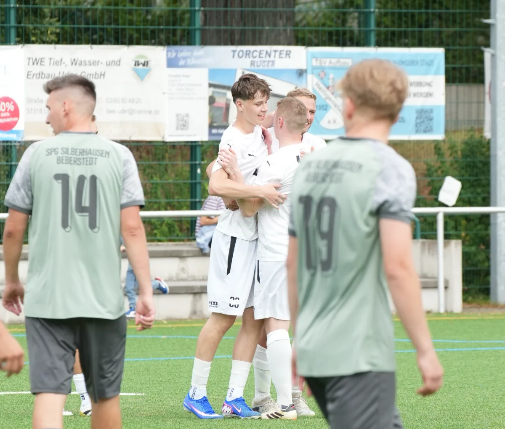
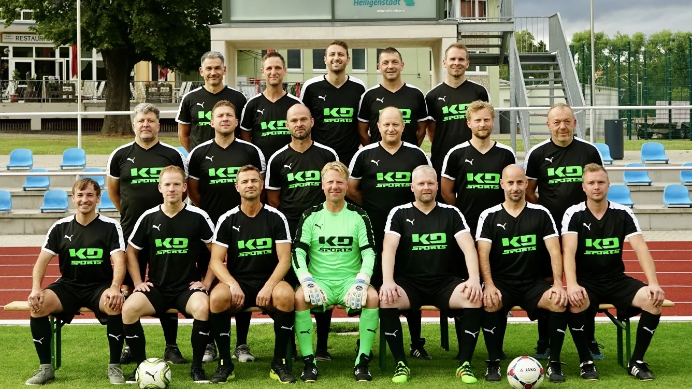
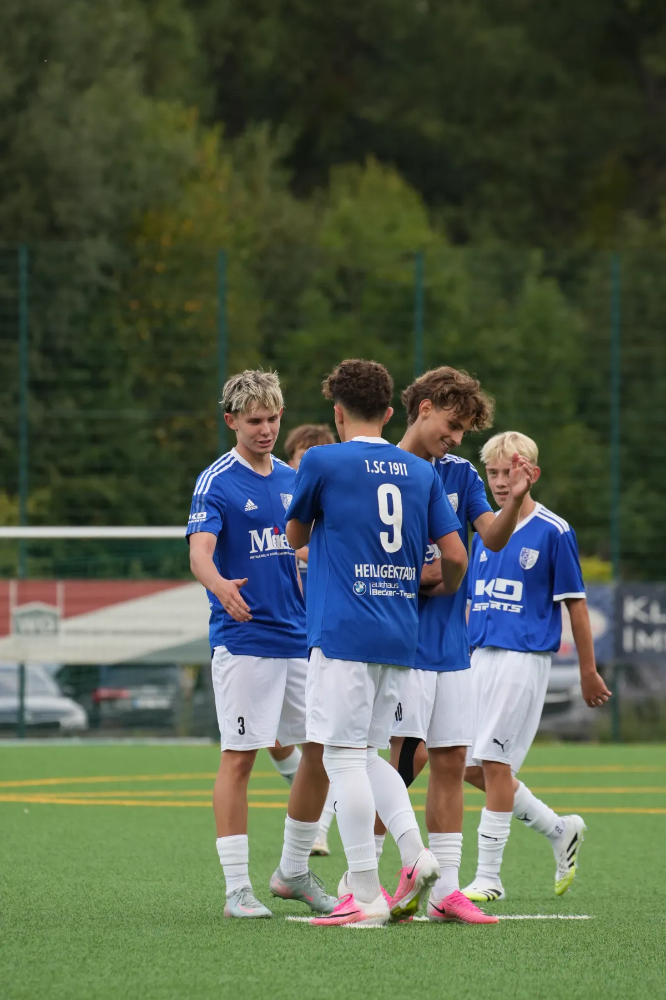

Vom Bambini bis zur ersten Mannschaft: Beim SCH spielen über alle Altersklassen hinweg Teams im Gesundbrunnen.
Unsere Mannschaften

Thüringenliga1. Mannschaft
Thüringenliga-Fußball mit Herz – Heimspiele im Gesundbrunnen.
Zur Mannschaft
Kreisoberliga2. Mannschaft
Die Brücke zwischen Nachwuchs und Erster.
Zur Mannschaft
Ü-FußballAlte Herren
Kicken mit Erfahrung – und Spaß daran.
Zur Mannschaft
U6 bis U19Nachwuchs
Von den Bambini bis zur U19 – Grundlagenausbildung und Leistungsförderung.
Zur MannschaftLeistungsförderung
U12 bis U19
Grundlagenausbildung
U6 bis U11